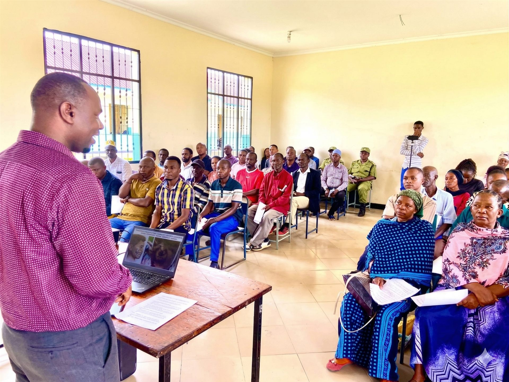

Health Professionals
Service ProvidersLead preventive health education and disease prevention efforts.
We are on a mission to build informed, self-reliant, and empowered communities through practical education and social transformation.

sibaba foundation was founded with a simple belief: everyone deserves access to clear, practical education that supports health, mindset transformation, economic empowerment, and ethical leadership.
Our platform works with community leaders, youth ambassadors, health educators, and facilitators to ensure inclusive and lasting local impact.
Back to Education & ServicesThe principles that guide everything we do.
Making transformative education available to everyone regardless of background or location.
Representing diverse communities in our content, programs, and outreach.
Programs are delivered through trusted providers and practical community engagement.
Using modern tools and interactive methods to make learning engaging and effective.
Serving individuals and communities with empathy, patience, and dignity.
Continuously improving services and education based on evidence and community feedback.
People and partners dedicated to awareness, empowerment, and sustainable development.
Lead preventive health education and disease prevention efforts.
Guide campaigns against harmful cultural practices and promote positive change.
Support leadership development, youth empowerment, and practical life skills.
Deliver pillar-based education and community-centered learning pathways.
A community-focused initiative aimed at meaningful and lasting change.
Sibaba Transformation Platform is a community-focused initiative aimed at driving meaningful change across three key areas: individual wellbeing, social and cultural practices, and economic development. The platform is based on the understanding that many communities do not struggle due to a lack of resources, but rather due to limited access to accurate information, the persistence of harmful beliefs, and a culture of dependency.
Through the combined efforts of Sibaba Foundation and Sibaba Social Enterprise Ltd, the platform works to address these challenges by promoting informed decision-making, encouraging the abandonment of harmful traditional practices, improving health outcomes, supporting the effective use of locally available resources, and fostering sustainable, self-reliant development within communities.
Identity Summary: Sibaba Transformation Platform is not only a health-focused initiative; it is a broader platform for personal, socio-cultural, and socio-economic transformation. It is designed to support communities in addressing underlying challenges that affect wellbeing, social practices, and economic progress in a holistic and sustainable way.
General Statement: A platform dedicated to personal, socio-cultural, and socio-economic transformation — empowering communities to break harmful traditions, unlock local potential, and build ethical, self-reliant futures.
Back to Education & Services
Quick answers to common questions about our programs and model.
It is a platform for personal, socio-cultural, and socio-economic transformation aimed at building healthy, ethical, and self-reliant communities.
We empower individuals and communities to eliminate harmful practices, improve health, unlock their potential, and build self-reliant livelihoods.
No. Health is one part of transformation. We also address mindset, economic empowerment, values, and community development.
It is a harmful practice of removing infants’ teeth based on incorrect health beliefs.
It is a philosophy that emphasizes that development begins when communities recognize and utilize the potential of their existing resources.